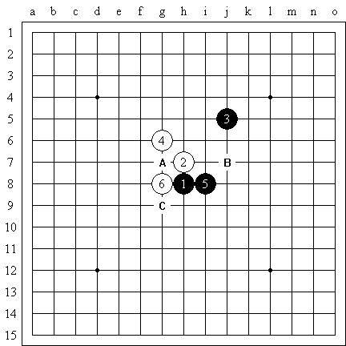
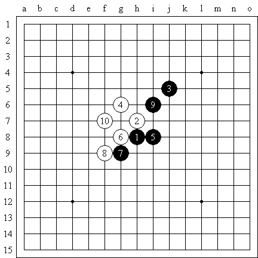
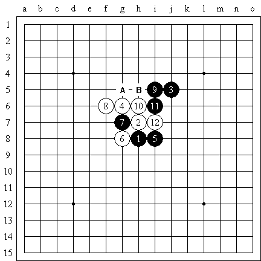
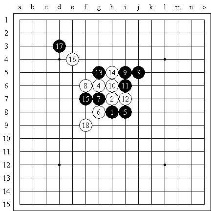
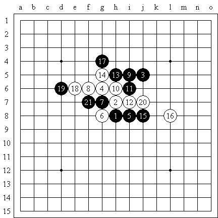
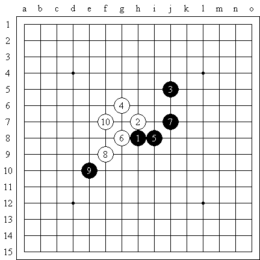
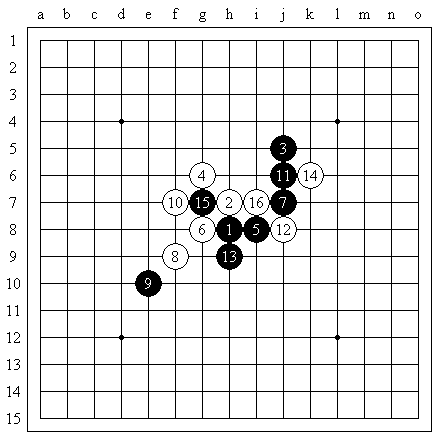

外溪月——说开局
#1 外溪月——说开局 作者：逆刃 发表时间：2008-5-26 14:18:31

规则（黑棋有三三，四四，长连禁手）
五子棋外溪月开局。6手之后，黑棋有三点选择。该如何判断？
虽然三三禁手的规则对于黑棋的影响很小，但毕竟存在。（开局阶段一般如果存在禁手就是三三禁手）
而白棋的手段就是就是瞄准黑棋三三点做棋。比如黑棋如果选择了c点。那么白棋就不会阻挡，而是做棋。

如上图黑棋9手，如果反向防守，白棋也是一样。白棋肯定可以抓到黑棋三三禁手。

7手如果这样选择，白棋8手简单挡住就可以，黑棋9手是一步好棋。把可能的连接都连起来了。13是关键的一手。如果黑棋错误的 选择了A点。想通过两手棋把白棋包围起来，那么就离输棋不远了。

黑棋形状散了之后，很容易被白棋抓住空档。这点要注意。

13活三，15在防守的同时作杀，16只有防守，17通过进攻破坏白棋的空间。18白棋多冲一下，否则被黑棋盖住。这样的13是正常的分寸。保持阵形的完整。利用17过渡，不给白棋喘息做棋的机会。

如果你选择这个7，就需要重点对这样的10好好计算一下。因为对攻是激烈的。但同时，我们又说，激烈的对攻中，先手的一方通常能保持优势，你看一下，阵形是否协调。能否想到几条连续进攻的线路，以及如何向白棋阵营过渡。

11，13都是利用进攻的急先手。白棋只有防守的份了。15再防守中间。由于黑棋反击的手段也很多。白棋16在进攻无果的情况下也之后去破坏黑棋11和1的连接。
总结一下。开局阶段，黑棋的首选并不是防守，防守的不是黑棋的主题。在自己子多的区域能够找到合适点，通常是黑棋一击必杀的关键。
其次，白棋令人意外的点也不是简单的挡住。而是针对黑棋的做棋。虽然开局阶段白棋子少，但是机会总是有的。
再次，双方棋子不可能一直不进行接触，利用进攻来过渡也是黑棋的一种手段。
逆刃注：
对于这个白8，其实是黑必胜，黑17后可以VCT取胜。参见 ShowPost.asp?ThreadID=3943
#2 Re:外溪月——说开局 作者：撒蓉儿 发表时间：2008-5-26 14:53:14
什么是百度用户啊，为什么不让我们看呢？
#3 Re:Re:外溪月——说开局 作者：有志青年 发表时间：2008-5-26 14:59:21
引用：已经修改
原文由 撒蓉儿 发表于 2008-5-26 14:53:14 :
什么是百度用户啊，为什么不让我们看呢？
#4 Re:外溪月——说开局 作者：撒蓉儿 发表时间：2008-5-26 15:13:04
谢谢有志大哥，现在可以看到了，不过我刚注册了一个百度用户。
#5 Re:外溪月——说开局 作者：upset 发表时间：2008-5-27 11:49:12
我还是看不到阿 ，逆刃老兄这几天发的图片#6 Re:外溪月——说开局 作者：逆刃 发表时间：2008-5-27 13:36:01
图片已经是本站图片，现在应该可以看到的了，楼上的再试试看。